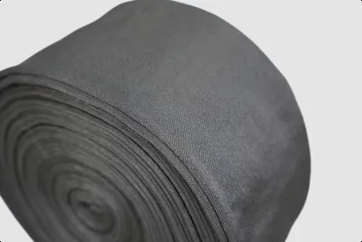

METAL FIBER YARN
金属纤维纱线
由金属纤维捻搓、纺纱而成的线材，兼具金属的导电导热耐高温与纺织纤维的柔韧性，可直接用于机织、针织与缝制。
- 核心参数
- 100% 316L 不锈钢 · 纤维直径低至 2μm
- 典型用途
- 防静电织物 · 电磁屏蔽 · 导电发热
从金属纤维出发，向下游延伸到纱线织物、烧结滤材、过滤元件，直到成套净化设备。每条产品线均可按工况参数定制，并提供样品测试。
也可按应用行业、材质与过滤精度快速筛选。
由金属纤维捻搓、纺纱而成的线材，兼具金属的导电导热耐高温与纺织纤维的柔韧性，可直接用于机织、针织与缝制。

微米级金属纤维无纺后高温层压烧结，形成三维网络梯度孔隙，纳污量大、压损小、可清洗再生。

金属纤维机织带、编织套管、针织套管与机织布，耐高温、柔软透气、导电防静电，是玻璃成型的理想缓冲包覆材料。

熔体滤芯、水滤芯、除尘滤芯与叶片滤盘，机械强度高、耐高温耐腐蚀、孔径分布均匀，可清洗再生、可焊接机加工。

以表面改性亲油疏水金属纤维为聚结材料的 FTS 收油系统，纯物理除油、不加破乳药剂，油份可回收复用。
| 产品线 | 常用材质 | 精度 / 规格区间 | 耐温 | 典型行业 |
|---|---|---|---|---|
| 金属纤维纱线 | 316L / 304 / 铁铬铝，可与芳纶、涤纶、PPS、棉混纺 | 纤维直径 2–100μm；60/100/275/1000 芯 | 350–850℃ | 防静电服装、电磁屏蔽、智能穿戴、汽车加热 |
| 金属纤维烧结毡 | 316L 不锈钢、铁铬铝、镍、钛、哈氏合金等 | 绝对精度 10–60μm；厚度 0.3–1.1mm | ≤480℃ | 化纤、石化、黏胶、高温气体除尘 |
| 金属纤维织物 | 100% 316L 不锈钢纤维 | 织带厚 0.35–0.5mm；幅宽 1000/1200/1500mm | 350℃ 长期 · 1100℃ 短时 | 玻璃深加工、钢化炉、印刷、防静电 |
| 过滤元器件 | 316L 滤材 + 304 骨架 / 支撑网 | 名义精度 10μm 起；可折波、可定制接口 | ≤480℃ | 化纤熔体、石化、水处理、除尘 |
| 净化设备 · 收油系统 | 改性金属纤维聚结芯 + 碳钢/不锈钢壳体 | 罐式 ≤30 m³/h；槽式按需；最大单套 600 m³/h | 按工况 | 镍钴湿法冶金、化工萃取、资源再生 |
* 具体过滤精度、孔隙率、透气值、耐温等实测参数，以各产品详情页与检测报告为准；非标规格支持定制。